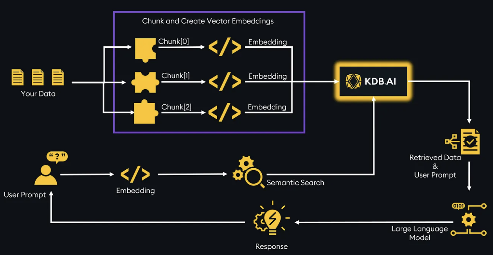

Increasingly there are a number of different systems and technologies being developed to support Foreign Object Debris (FOD) detection and mitigation in internal aircraft structures, each attempting to support effective solution for safe air travel. Yet the majority of these systems suffer from the same central problems, in that they require tight manual inspection within the structures. While this is certainly understandable due to the complicated nature of hardware and software interactions in automobile and aircrafts, it creates substantial barriers for safety. Another concern is the traditional software certification authoring and verification process which requires manual efforts, and the rigorous manual evaluation consuming heavy man hours and resources. As every industry advances towards conversational AI, my work at Boeing involved meticulously working in Boeing Conversational AI (code assistant project). Where I received hands-on experience on Codestral, Ollama powered LLMs for auto-completion, embedding and re-ranking operations using LLM and generative AI.
The solution I worked on for the first problem of FOD elimination was to build a computer vision model for which I conducted a research-driven project to develop a computer vision algorithm aimed at detecting and mitigating foreign object debris (FOD) during aircraft assembly. For this process, I collected, annotated, and curated datasets of 5000+ images, then trained multiple models to evaluate accuracy and performance, built a unified evaluation script to benchmark the accuracy of the entire system. I worked on designing innovative pure computer vision algorithms to address challenges encountered during development, applied advanced image processing, enhancement, and data augmentation techniques tailored to the specific problem. I completed the deployment of a real-time computer vision model on high-performance computing (HPC) infrastructure and exposed APIs for streamlined model access. With respect to my solution towards automating the aircraft software certification pipeline, I designed and implemented a complete Retrieval-Augmented Generation (RAG) pipeline to parse unstructured documents, store extracted information in a vector database (ChromaDB), and retrieve it using advanced search parameters. I successfully ;ed the development of the back-end system using Flask, ensuring robust and efficient API integrations for user creation and personalized recommendations. My collaboration involved closely working with front-end engineers to deliver seamless APIs for filtering results based on user preferences. Post that I fine-tuned a Sentence Transformer using an unsupervised learning algorithm to enhance retrieval accuracy, with embedding visualizations done in TensorBoard.
While our project had an audacious scope right from the beginning, the scope has been exponentially increasing with the development of new technologies in AI/ML field. Specifically, the project focused on supporting situations where accurate plant data collection and environmental maintenance is critical, such as research, commercial or experimentation applications. This is not to say that these are the only situations under which the system could operate, but through our user research we found these to be the most applicable use cases for such a system.
The target users for our systems essentially fall into two different categories i.e the common man travelling in aircrafts and 2. The partners who massively rely on technical strength of the leading aerospace compan’s research and products, both sharing a common characteristic of being heavily concerned about the human safety.
Boeing Fuel Tank Debris Check
Using Llama for Software Certification Assistance